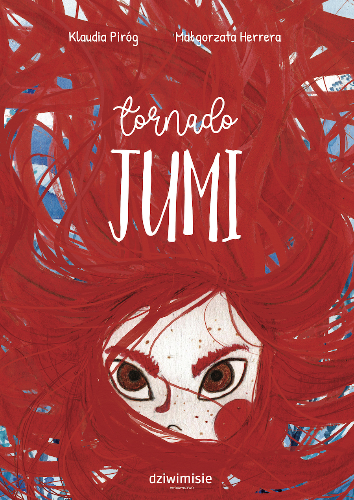

Premiera już wkrótce
Jumi jest dziewczynką, której emocje wywołują tornado, z którym nie potrafi sobie poradzić. Chciałaby cieszyć się i bawić z przyjaciółmi, ale musi najpierw pokonać swoje tornado.To książka pełna emocji, nie tylko tych dobrych, ale i tych złych, z którymi wszyscy musimy próbować sobie poradzić.